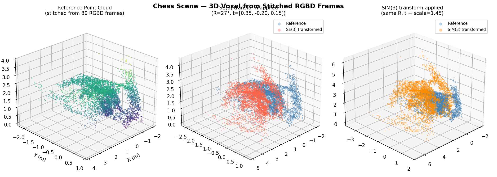
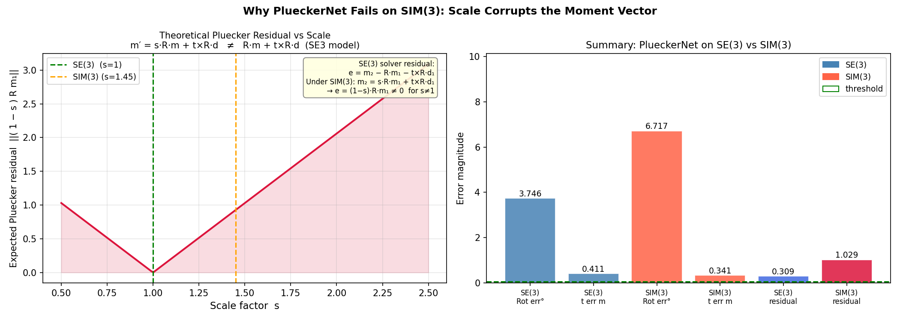

Extending 3D line registration from SE(3) to Sim(3) — jointly recovering rotation, translation, and scale from Plücker line correspondences.
Department of Robotics · University of Michigan, Ann Arbor · 2026
PlueckerNet learns to match 3D line correspondences between two scenes using Plücker coordinates. Its RANSAC back-end recovers the relative SE(3) pose. A natural extension is Sim(3) — the similarity group that adds uniform scale — which arises in monocular SLAM, scale-ambiguous reconstruction, and multi-session mapping where two maps share geometry but were built at different metric scales.
Key design insight: the correspondence network does not need to change. The Sinkhorn matching learns scale-agnostic features: directions d are unit vectors under Sim(3), and the relative moment structure within each point set is preserved up to a global scale. Only the RANSAC back-end needs to be extended to Sim(3). Scale is then recovered analytically from the moment magnitudes of the matched pairs.
Critical implementation note: moment vectors m must not be normalized before feeding to the network. Their magnitude encodes scene scale; normalizing them destroys the only signal that makes scale estimation possible.
Analytical proof + experiments showing the SE(3) Plücker solver fails structurally under Sim(3): correct rotation, biased translation.
Minimal 2-correspondence solver: SVD on direction pairs for R, then a 6×4 least-squares system for (s, t) jointly.
Trained on Replica RGBD geometry (7 scenes, 4200 pairs) — closes the 89° synthetic-to-real gap to 9.4° on Chess.
Appends per-line RGB to 6D Plücker coordinates; 30% color dropout enables a single model to handle RGBD, RGB-only, and mixed inputs.
27,658-scene joint dataset from Replica, 7-Scenes, and SE3-real sources with GlueStick world-space line extraction. The joint model fully generalizes across all three domains.
Scale- and translation-invariant inlier metric on G(1,5) with stratified sampling and Tikhonov regularization — eliminates degenerate all-parallel hypothesis failure.
A 3D line through point p with unit direction d is encoded as:
| Group | Direction | Moment |
|---|---|---|
| SE(3) (R, t) | d′ = R d | m′ = R m + t × R d |
| Sim(3) (s, R, t) | d′ = R d | m′ = s · R m + t × R d |
The SE(3) solver assumes m₂ = R m₁ + t × R d₁ and minimises the residual:
This residual is non-zero for any s ≠ 1 and cannot be made zero by any choice of t. It grows linearly with |s − 1| and with the magnitude of the moment vectors.
Consequences:
Pipeline: 30 RGBD frames → voxel point cloud → PCA-based 3D line extraction → Plücker registration. Ground-truth transform: R = 27°, t = [0.35, −0.20, 0.15] m, s = 1.45.
| Rotation error | Translation error | Plücker residual | |
|---|---|---|---|
| SE(3) solver on SE(3) data | 0.000° | 0.000 m | 0.000 ✓ |
| SE(3) solver on Sim(3) data (s = 1.45) | 0.000° | 0.858 m | 0.630 ✗ |





The PluckerNetKnn architecture is unchanged — only the RANSAC back-end is extended from SE(3) to Sim(3).
Why the network does not need to change for Sim(3): directions transform as d′ = Rd (scale-invariant), so the KNN graph structure is identical in both views. The GNN's cross-attention learns to match lines with the same rotated direction and consistent moment ratio. Scale is recovered analytically by RANSAC from the moment magnitudes of the matched pairs — the network never sees it explicitly.
| Layer | Input → Output | Notes |
|---|---|---|
| KNN graph conv — moments | (B,3,N) → (B,64,N) | get_graph_feature + Conv2d + MLP |
| KNN graph conv — directions | (B,3,N) → (B,64,N) | same structure |
| MLP merge | (B,128,N) → (B,128,N) | concat → Linear → BN → ReLU |
| Self-attention ×6 | (B,128,N) → (B,128,N) | MultiHead(4 heads, dim=32) + MLP residual |
| Cross-attention ×6 | (B,128,N₁)+(B,128,N₂) → same | queries from one cloud, keys/values from other |
| Pairwise L2 distance | (B,128,N₁),(B,128,N₂) → (B,N₁,N₂) | |
| Sinkhorn OT | (B,N₁,N₂) → (B,N₁,N₂) | 30 iterations, temperature λ=0.1 |
Output: prob_matrix — soft doubly-stochastic matrix where prob_matrix[b,i,j] is the probability that line i in cloud 1 corresponds to line j in cloud 2.
All Sim(3) code uses [m, d] order — moment first, direction last:
The original SE(3) PlueckerNet uses [d, m] order. Conversion is handled by scripts/convert_se3_datasets.py. The 9D color extension appends LAB: [m₀,m₁,m₂, d₀,d₁,d₂, L*,A*,B*].
Given R from direction SVD (scale-invariant), each line contributes one moment equation:
Binary cross-entropy loss on the predicted prob_matrix vs the ground-truth match matrix C_gt:
RANSAC is not used during training — only called during validation to report pose metrics. The training checkpoint is selected by avg_inlier_ratio (the fraction of the network's top-K predictions that are true inlier correspondences).
| Metric | Description |
|---|---|
| recall_rot | Fraction of scenes with rotation error < 20° |
| med_rot | Median rotation error (degrees) |
| med_trans | Median translation error |
| med_scale_err | Median log-ratio scale error |log(ŝ/s)| |
| avg_inlier_ratio | Average % of top-K candidates that are true inliers ← primary metric |

Three steps building a joint dataset of 27,658 train / 1,523 valid scenes from three domains.
Merges semantic3D and structured3D and applies random Sim(3) scale per scene:
Per-scene pipeline from RGBD sequences:
Pair generation (N_TOTAL = 700 lines per pair, N_MAX_INLIERS = 490 at 100% overlap; scale s ~ log-uniform(0.1, 10.0) applied to target cloud). Overlap sampled at discrete levels:
| Overlap | Probability | n_inliers |
|---|---|---|
| 0% (zero-overlap) | 12% | 0 — s_gt = 0.0 signals no GT pose |
| 5% | 8% | ~25 |
| 10% | 8% | ~49 |
| 20% | 9% | ~98 |
| 30% | 9% | ~147 |
| 50% | 10% | ~245 |
| 70% | 10% | ~343 |
| 100% | 34% | 490 |
GlueStick must run on CPU. GPU inference crashes with SPWireframeDescriptor. Only the ['lines'] output is used — GlueStick's own matching is not used.
| Split | Train | Valid | Source |
|---|---|---|---|
| replica_gs | 14,000 | 400 | Replica RGBD, GlueStick world-space lines |
| 7scenes_gs | 9,000 | 300 | 7-Scenes RGBD, GlueStick world-space lines |
| se3real_sim3 | 4,658 | 823 | semantic3D + structured3D + scale aug |
| joint | 27,658 | 1,523 | All three combined |
Each split is a directory of 6 pickle files (lists of numpy arrays):
| File | Shape per sample | dtype |
|---|---|---|
| matches.pkl | (2, n_inliers) — row 0 = src indices, row 1 = tgt indices | int32 |
| plucker1.pkl | (N_TOTAL, 6) | float32 |
| plucker2.pkl | (N_TOTAL, 6) | float32 |
| R_gt.pkl | (3, 3) | float32 |
| t_gt.pkl | (3, 1) | float32 |
| s_gt.pkl | scalar (0.0 = zero-overlap, no valid pose) | float32 |
Four experiments across synthetic and real scenes, comparing SE3-PlueckerNet, Sim3-Net (synthetic), ScalePluckerNet (Replica-trained), and pure Sim(3) RANSAC.


| Experiment | Method | Rot (°) ↓ | Scale err ↓ | Inliers |
|---|---|---|---|---|
| A1 — Synthetic cube, SE(3) (s = 1) | ||||
| SE3-PlueckerNet | 159.60 | 0.000 | 46 | |
| Sim3-Net (synthetic) | 0.23 | 0.001 | 20 | |
| ScalePluckerNet | 0.03 | 0.000 | 49 | |
| Pure Sim(3) RANSAC | 48.78 | 5.722 | 36 | |
| A2 — Synthetic cube, Sim(3) (s = 1.8) | ||||
| SE3-PlueckerNet | 45.00 | 0.588 | 0 | |
| Sim3-Net (synthetic) | 0.16 | 0.000 | 13 | |
| ScalePluckerNet | 0.09 | 0.000 | 44 | |
| Pure Sim(3) RANSAC | 4.97 | 5.817 | 29 | |
| B1 — Chess 7-Scenes RGBD (s = 1) | ||||
| SE3-PlueckerNet | 6.65 | 0.000 | 65 | |
| Sim3-Net (synthetic) | 168.99 | 1.513 | 3 | |
| ScalePluckerNet | 9.41 | 0.203 | 5 | |
| Pure Sim(3) RANSAC | 0.98 | 0.570 | 8 | |
| B2 — Chess 7-Scenes RGB-only (simulated monocular, s = 1.8) | ||||
| SE3-PlueckerNet | 19.02 | 0.588 | 18 | |
| Sim3-Net (synthetic) | 12.10 | 3.503 | 6 | |
| ScalePluckerNet | 5.75 | 0.149 | 3 | |
| Pure Sim(3) RANSAC | 0.81 | 4.096 | 10 | |


Appending per-line RGB — [m₀ m₁ m₂ d₀ d₁ d₂ r g b] — with 30% color dropout for robustness to colorless inputs.
| Model | Val set | Inlier ratio | Recallrot | Med. rot |
|---|---|---|---|---|
| ScalePluckerNet (6D) | replica_valid (room2) | 99.185% | 1.000 | 0.00° |
| ScalePluckerNet (9D color) | replica_valid (room2) | 99.355% | 1.000 | 0.00° |
All Sim(3) models evaluated with Grassmannian RANSAC unless noted. recall_rot = fraction of scenes with rotation error < 20°. med_s_err = median |log(s_est/s_gt)|.
Primary Sim(3) benchmark. Scale error is only meaningful here since s ≠ 1. Original PlueckerNet is included — trained on the same structured3D/semantic3D data so it can find correspondences, but does not estimate scale.
| Model | RANSAC | recall_rot ↑ | med_rot° ↓ | med_trans ↓ | med_s_err ↓ | inlier% |
|---|---|---|---|---|---|---|
| Original PlueckerNet (SE3) | L2 (original) | 0.175 | 180.0° | — | — | 58.6% |
| Original PlueckerNet (SE3) | Grassmannian | 0.877 | 8.15° | 2.04 | — | 58.6% |
| se3real, no cosine (ep 91) | L2 | 0.247 | 85.4° | — | 0.232 | 68.4% |
| se3real, no cosine (ep 91) | Grassmannian | 0.909 | 7.6° | 2.04 | 0.027 | 68.4% |
| se3real, cosine (ep 208) | Grassmannian | 0.883 | 7.81° | 2.02 | 0.026 | 69.0% |
| Joint, cosine (ep 297) | Grassmannian | 0.898 | 7.98° | 2.045 | 0.024 | 67.2% |
| Joint + dustbin (ep 82) | Grassmannian | 0.875 | 7.85° | 2.037 | 0.030 | 67.5% |
The L2 → Grassmannian jump (0.247 → 0.909 recall, 85° → 7.6° med_rot) is purely a RANSAC solver change — same network weights. The 2-line L2 solver fails on structured3D/semantic3D parallel lines (rank-1 cross-covariance → 180° degenerate rotation). Grassmannian samples 3 lines stratified by dominant axis, eliminating this.
| Model | Overlap | N | recall_rot ↑ | med_rot° ↓ | med_trans ↓ | inlier% |
|---|---|---|---|---|---|---|
| Original PlueckerNet (SE3) | ||||||
| overall | 400 | 0.005 | 135.5° | 2.25 | 0.2% ❌ | |
| se3real, no cosine (ep 91) | ||||||
| overall | 400 | 0.007 | 137.0° | 2.14 | 0.2% ❌ | |
| no overlap | 39 | 0.000 | 180.0° | — | 0.0% ❌ | |
| sparse (~30%) | 142 | 0.007 | 132.2° | 2.00 | 0.0% ❌ | |
| dense (~70%) | 219 | 0.009 | 131.2° | 2.24 | 0.4% ❌ | |
| se3real, cosine (ep 208) | ||||||
| overall | 400 | 0.007 | 135.7° | 2.20 | 0.2% ❌ | |
| no overlap | 39 | 0.000 | 180.0° | — | 0.0% ❌ | |
| sparse (~30%) | 142 | 0.007 | 130.1° | 2.17 | 0.0% ❌ | |
| dense (~70%) | 219 | 0.009 | 130.6° | 2.20 | 0.4% ❌ | |
| Joint, cosine (ep 297) | ||||||
| overall | 400 | 0.682 | 0.01° | 0.000 | 79.7% | |
| no overlap | 39 | 0.000 | 180.0° | — | 0.0% | |
| sparse (~30%) | 142 | 0.690 | 0.01° | 0.000 | 70.2% | |
| dense (~70%) | 219 | 0.799 | 0.01° | 0.000 | 100.0% | |
| Joint + dustbin (ep 82) | ||||||
| overall | 400 | 0.720 | 0.01° | 0.000 | 79.5% | |
| no overlap | 39 | 0.000 | 180.0° | — | 0.0% | |
| sparse (~30%) | 142 | 0.676 | 0.01° | 0.000 | 69.8% | |
| dense (~70%) | 219 | 0.877 | 0.00° | 0.000 | 99.9% | |
| Model | Overlap | N | recall_rot ↑ | med_rot° ↓ | med_trans ↓ | inlier% |
|---|---|---|---|---|---|---|
| Original PlueckerNet (SE3) | ||||||
| overall | 300 | 0.007 | 141.0° | 2.18 | 0.0% ❌ | |
| se3real, no cosine (ep 91) | ||||||
| overall | 300 | 0.000 | 139.9° | — | 0.1% ❌ | |
| no overlap | 37 | 0.000 | 180.0° | — | 0.0% ❌ | |
| sparse (~30%) | 114 | 0.000 | 131.5° | 2.14 | 0.0% ❌ | |
| dense (~70%) | 149 | 0.000 | 134.7° | 2.17 | 0.1% ❌ | |
| se3real, cosine (ep 208) | ||||||
| overall | 300 | 0.003 | 144.6° | 2.04 | 0.1% ❌ | |
| no overlap | 37 | 0.000 | 180.0° | — | 0.0% ❌ | |
| sparse (~30%) | 114 | 0.000 | 127.4° | 1.93 | 0.0% ❌ | |
| dense (~70%) | 149 | 0.007 | 142.8° | 2.11 | 0.1% ❌ | |
| Joint, cosine (ep 297) | ||||||
| overall | 300 | 0.647 | 0.01° | 0.000 | 76.0% | |
| no overlap | 37 | 0.000 | 180.0° | — | 0.0% | |
| sparse (~30%) | 114 | 0.728 | 0.01° | 0.000 | 69.3% | |
| dense (~70%) | 149 | 0.745 | 0.01° | 0.000 | 100.0% | |
| Joint + dustbin (ep 82) | ||||||
| overall | 300 | 0.657 | 0.01° | 0.000 | 75.7% | |
| no overlap | 37 | 0.000 | 180.0° | — | 0.0% | |
| sparse (~30%) | 114 | 0.702 | 0.01° | 0.000 | 68.6% | |
| dense (~70%) | 149 | 0.785 | 0.01° | 0.000 | 100.0% | |
Both the original PlueckerNet and the se3real specialist fail completely on replica_gs and 7scenes_gs — same ~135–141° rotation and <0.2% inlier ratio regardless of overlap level. Both were trained exclusively on structured3D/semantic3D data and do not generalize to GlueStick world-space line parameterization. Only the joint model (trained on all three domains) generalizes.
| Model | Val set | Inlier ratio | Recallrot |
|---|---|---|---|
| joint_color (epoch 345) | replica_gs_color_valid | 98.22% | 1.000 |
| joint_color (epoch 345) | 7scenes_gs_color_valid | 98.23% | 1.000 |
| phase4b dustbin (9D, ep 20) | replica_gs_color_valid | 97.84% | 1.000 |
| phase4b dustbin (9D, ep 20) | 7scenes_gs_color_valid | 97.99% | 1.000 |
9D models should not be evaluated on 6D (colorless) datasets — neutral LAB padding [50, 0, 0] gives zero discriminative signal and causes severe degradation. Use the 6D joint checkpoint for colorless inputs.
Append per-line mean LAB color to the 6D Plücker vector, giving 9D input [m₀,m₁,m₂, d₀,d₁,d₂, L*,A*,B*]. Color provides an additional discriminative signal for matching lines in scenes with strong chromatic structure.
Dataset generation: both RGBD generators support color via the --add_colors flag. The mean LAB color of each 3D line's reprojected pixels is computed during pool construction.
Training: pass --in_channel 9 to train.py. The network architecture is unchanged; the KNN encoder simply receives 9-channel input instead of 6.
Important: 9D checkpoints should not be evaluated on 6D (colorless) datasets. Neutral LAB padding gives zero discriminative signal from the color channel and degrades performance. Use the 6D joint checkpoint for colorless inputs.
Prior results: joint_color (epoch 345): 98.22% inlier ratio on replica_gs_color_valid, 98.23% on 7scenes_gs_color_valid — ~1.7% cost vs the 6D joint model on the same data.
A learnable dustbin row and column are appended to the assignment matrix (SuperGlue-style), allowing the network to explicitly route unmatched lines to the dustbin rather than forcing them onto wrong correspondences. This improves robustness at low overlap.
Enable with --dustbin. Best used as a fine-tuning step from a converged joint checkpoint:
Implementation: sim3/model_dustbin.py (PluckerNetKnnDustbin), sim3/trainer_dustbin.py.
--cosine_lr replaces ExponentialLR with CosineAnnealingWarmRestarts(T_0=50, T_mult=2, eta_min=1e-6). Useful for long training runs where the default decay bottoms out too early.
The Grassmannian solver (sim3/ransac_grassmannian.py) uses the principal angle between Plücker lines as the inlier metric — a proper geodesic distance on the Grassmannian G(1,5). This is scale- and translation-invariant, unlike the L2 threshold used by the default solver (whose effective sensitivity varies with scene scale).
Additional improvements over the default solver:
Enable: --ransac grassmannian in scripts/eval.py. Inlier criterion: arccos(|L̂₁·L̂₂|) < 0.15 rad.
ScalePluckerNet used as a SLAM front-end: persistent object tracks create Sim(3) frame-to-frame edges. Evaluated on Replica room2 (150 frames, 3 tracks) against ground-truth trajectories.


| Model | ATE RMSE (m) ↓ | Median (m) ↓ | P90 (m) ↓ |
|---|---|---|---|
| Sim3-Net (synthetic) | 0.694 | 0.685 | 0.873 |
| ScalePluckerNet | 0.702 | 0.686 | 0.875 |
Both models exceed 99% inlier ratio — the ATE bottleneck is sparse object track coverage (3 tracks / 150 frames), not matcher quality.
If you use this work, please also cite the original PlueckerNet:
GlueStick 3D line segments extracted from 80 RGBD frames of Replica office0. Toggle traces via the legend. Tab 1: scene depth cloud + full GT line cloud + GT stitch result. Tab 2: 50% overlap split. Tab 3: Sim(3) registration problem with GT and predicted correspondences highlighted.